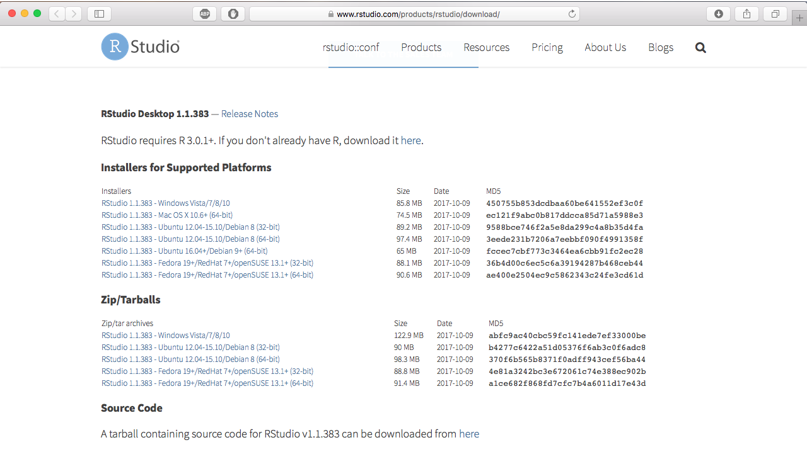

install.packages("dplyr") # Se puede instalar más de una librería a la vez5 R Project
Repaso de Lenguaje de Programación
5.1 ¿Qué es R Project?
R es un lenguaje programación multiparadigma (procedural, imperativo, orientado a objetos y funcional) enfocado a aplicaciones estadísticas. Por estadísticas se debe entender también los campos de estudio que se basan o las utilizan como económía, finanzas, ciencia de datos, machine learning, etc.
5.1.1 Ventajas de Utilizar R Project
1. R es un software libre
- La libertad de ejecutar el programa como desee y con cualquier propósito
- Estudiar el funcionamiento del programa y adaptarlo a sus necesidades.
- Rescribir copias para ayudar a los demás.
- Manejar el programa y publicar las mejorar, de manera que toda comunidad se beneficie.
2. R es multiplataforma
- R funciona en Mac, Windows y en numerosos sistemas UNIX. Esto significa que cualquier persona puede trabajar con tus datos, figuras, análisis y más importante aún usar tus instrucciones (también conocido como scripts o código) para generar las figuras y el análisis. Así que cualquier persona, y en cualquier lugar del mundo, con acceso a cualquier SO puede usar R sin ninguna licencia.
3. R es de código abierto
- Existe una gran comunidad de voluntarios trabajando para mejorarlo, lo cual permite ser moldeado y dirigido a cuestiones específicas. Creando así programas y paquetes que funcionen en el entorno R. Programas tales como R-studio, Java GUI for R, R- commander, RKWard, entre otros, y con más de 18000 paquetes indexado en CRAN, Biocoductor, GitHub y R-Forge.
4. Todo dentro de un mismo entorno
- R remplaza la combinación de varios programas para el proceso de análisis de datos, por ejemplo Excel, ArcGis, QGis, SigmaPlot, entre otros. Esto no solo resulta en el alto costo de las licencias de múltiples programas, si no también, en la gran cantidad de archivos con diferentes formatos que no podrían leer otros programas. En cambio con solo utilizar R, puedes realizar todo el análisis de datos e inclusive leer archivos de diferentes formatos.
5.1.2 Desventajas de utilizar R
- R tiene una vasta documentación de ayuda, descripción de paquetes y de funciones, que es difícil encontrar información específica en un momento dado.
- Los mensajes de error que R nos muestra, no es específica sobre los fallos que estamos realizando y solo un usuario con cierta experiencia en el uso de R puede saberlo.
5.2 Instalación de R Project
5.2.1 Instalación de R Project
Primero se debe instalar R Project desde su sitio oficial (https://cran.r-project.org/bin/windows/base/), se ejecuta el instalador que se descargó depende del sistema operativo del PC, como se muestra en las siguientes figuras:

5.2.2 Instalación de R para Windows

5.2.3 Instalar Rtools (solo Sistema Operativo Windows)
5.2.4 Instalación de R para Mac

R Project Ejecutándose

5.3 Instalación de RStudio
Se recomienta instalar Rstudio, que es Interfaz de Usuario de R Project, desde su sitio web oficial, el cual permite acceder con mayor facilidad a sus funciones y potencialidades de R.




5.3.1 RStudio Cloud
RStudio Cloud es una versión ligera del IDE RStudio alojada en la la nube que permite a cualquiera hacer, compartir, enseñar y aprender Ciencias de Datos Online. Tiene una versión gratuita limitada.
5.3.1.1 Características:
- Analyze your data using the RStudio IDE, directly from your browser.
- Share projects with your team, class, workshop or the world.
- Teach data science with R to your students or colleagues.
- Learn data science in an instructor-led environment or with interactive tutorials.


5.4 Instalar Librerías
5.4.1 Librerías en R
Las librerías o paquetes en R corresponden a una colección de funciones encapsuladas y diseñadas para atender una tarea específica. Por ejemplo, hay paquetes para trabajo visualización geoespacial, análisis psicométricos, mineria de datos, interacción con servicios de internet y muchas otras cosas más.
Estos paquetes se encuentran alojados principalmente en CRAN (Comprehensive R Archive Network), así que pasan por un control riguroso antes de estar disponibles para su uso generalizado, al día de hoy (29.11.2021) existen 18498 paquetes disponibles. En el siguiente enlace se deja una lista de temas y sus librerías asociadas disponibles, con una breve descripción (enlace)
Aunque las versiones de prueba de una librería pueden estar disponible en Github (Respositorio de Control de Versiones) de cada autor.
5.4.2 Ejemplo de Instalación de Librerías desde R
Podemos instalar paquetes usando la función install.packages(), dando como argumento el nombre del paquete que deseamos instalar, entre comillas.
Para instalar librerías se puede hacer directamente desde la consola de RStudio, por ejemplo:
5.4.3 Ejemplo de Instalación de Librerías desde Rstudio
También se pude instalar librerías del Panel “Packages”

Y por último se puede instalar desde Pestaña “Tools” -> “Install Packages”:

5.5 Definición de Directorios de Trabajos
Definir directorio de Trabajo con RStudio


Definir Directorio de Trabajo con una función
setwd("~/OneDrive - Universidad Adolfo Ibanez/FONDECYT/capacitacion_SPD")Consultar Directorio de Trabajo
getwd()[1] "/Users/denisberroeta/Documents/Docencia/Goblab/geoanalisis_book"